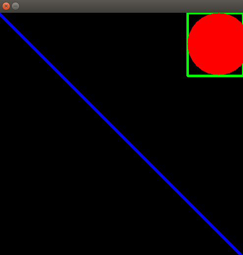
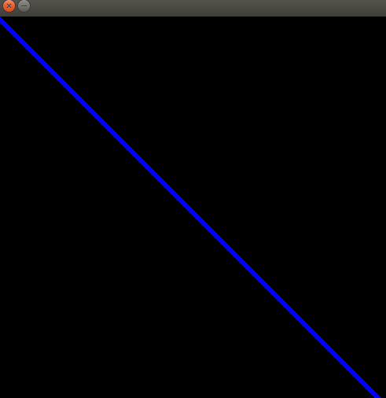
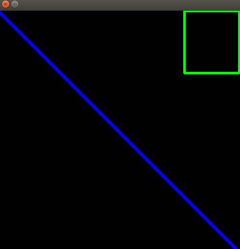

绘图
1. 引入
学习使用OpenCV 绘制不同的几何图形

将学习这些函数:
- cv2.line()
- cv2.circle()
- cv2.rectangle()
- cv2.ellipse()
- cv2.putText()
- 。。。等等。。。
代码参数分析
在文章目标中列出的所有函数中，我们将看到如下一些常见的参数:
img图形：我们想要绘制形状的图像color颜色：形状的颜色。对于BGR，将其作为元组传递，例如，(255,0,0)对应的就是蓝色。对于灰度图像，我们只需传递标量值thickness厚度：线或圆等形状的厚度。对于圆形这样的闭合图形，如果该参数传递-1，就会填充颜色进形状中。默认厚度为 1lineType线类型：线的类型，是否8连接，反锯齿线 anti-aliased line等。这个参数默认为8 连接。cv2.LINE_AA 提供了反锯齿的线条，在绘制曲线上很实用
2. 绘图操作
2.1 画线
要绘制直线，需要传递直线的起始和结束坐标
如下代码将创建一个黑色的图像，并在上面从左上角到右下角画一条蓝线
import numpy as np
import cv2
# 创建一个黑色的背景图
# 大小为500x500 的图片，有3个channels,分别对应蓝色，绿色，红色
# 因为我们使用了np.zeros, 会对这三个channels 分别赋予0，（0,0,0）也就是黑色
# np.uint8 代表我们数组的类型
img = np.zeros((500, 500, 3), np.uint8)
# 画一条对角蓝线，厚度为5 px
# 参数分别是起始点，重点，颜色：蓝色，厚度：5 px
cv2.line(img, (0, 0), (500, 500), (255, 0, 0), 5)
print(img)
# 展示图像
cv2.imshow('', img)
k = cv2.waitKey(0)
cv2.destroyAllWindows()
效果如下：

2.2 画长方形
要画一个矩形，我们需要阐明矩形的左上角和右下角。
如下代码是在窗口的右上角画一个绿色矩形
# 画一个绿色的在窗口右上角的矩形
cv2.rectangle(img, (384, 0), (510, 128), (0, 255, 0), 3) # 参数为：左上角，右下角，绿色，粗细
效果如下：

2.3 画圆
要画一个圆，我们需要阐明它的中心坐标和半径
如下代码将在上面画的矩形里面画一个圆
# 画一个圆
cv2.circle(img, (447, 63), 63, (0, 0, 255), -1) # 圆的中心坐标，半径，红色，厚度为-1表明颜色填满整个圆
程序运行一下

3. 添加文字
要将文本放入图像中，我们需要指定以下内容：
- 要写入的文本数据
- 想要放置文本的位置坐标(即数据开始的左下角)
- 字体类型
- 字体大小(指定字体大小)
- 常规的东西，比如颜色，厚度，线条类型等等。
如下代码将在图像上用蓝色字体书写"xyz"
import cv2
img = cv2.imread("dog2.jpg")
font = cv2.FONT_HERSHEY_SIMPLEX # 字体类型
# 参数是OpenCV 输入文本数据，放置文本的位置坐标，字体类型，字体大小，颜色为白色，厚度为2
cv2.putText(img, 'xyz', (10, 50), font, 2, (255, 0, 0), 2)
cv2.imwrite("dog2_font.jpg", img)
让我们来运行下代码
【附录】具体的各个方程的参数
要是大家有兴趣各个方程函数中的具体参数可以有哪些，可以点击链接Drawing Functions 查看